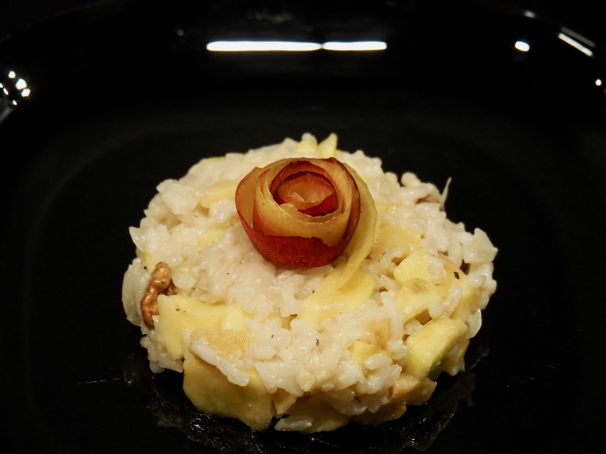
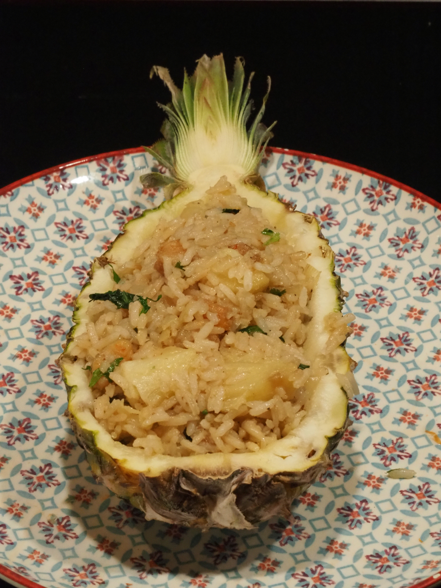

Hiver
Salé
Linguines citron et coriandre
2 personnes | Temps préparation : 10 min | Temps cuisson : 10 min
Plat de pâtes simple et rapide mais percutant !
Ingrédients
- 250 g de linguines (au pire des spaghetti)
- 1 à 2 citrons bios
- 2 gousses d’ail
- Quelques brins de coriandre
- Beurre
- Crème
Consignes
- Eplucher l’ail et la couper en petits morceaux
- Faire fondre un peu de beurre dans une casserole et y faire revenir à feu doux le zeste du/des citrons et l’ail
- Faire chauffer l’eau des pâtes (dans une autre casserole bien sûr)
- Rajouter le jus de citron et 5 à 6 cs de crème dans la sauce. Laisser s’amalgamer à feu doux
- Cuire les pâtes, 1 à 2 min de moins que nécessaire
- Mettre 1 ou 2 cs d’eau de cuisson des pâtes dans la sauce
- Égoutter les pâtes et les mettre directement dans la sauce où elles finiront de cuire en s’imbibant de sauce.
- Ciseler la coriandre et l’ajouter
- Assaisonner selon les gouts et servir
Couscous boulette végétarien
~15 boulettes | Temps préparation : 30 min | Temps cuisson : 20 min
Pour un plat chaleureux et convivial au coeur de l’hiver.
Ingrédients
- 250 g de champignons de Paris
- 2 gousses d’ail
- 1 oignon
- 100 g d’amandes
- 120 g de pain rassis
- 10 branches de persil
- 2 œufs
Consignes
- Hacher très finement les champignons, l’oignon et l’ail
- Les faire revenir dans un peu d’huile d’olive pendant 5 min
- Mixer les amandes et le pain rassis
- Ciseler le persil
- Dans un saladier, mettre tous les ingrédients et ajouter les œufs
- Mélanger, assaisonner et mettre au réfrigérateur (facultatif)
- Préchauffer le four à 180°C et préparer une feuille de papier sulfurisé sur la plaque
- Former une quinzaine de boulettes, poser les sur la plaque et les badigeonner d’un peu d’huile avec un pinceau
- Enfourner pour une vingtaine de minutes
- Servir avec des légumes (courges, patates douces, navets, carottes, pois chiches, blettes selon les envies et la saison) cuits dans du concentré de tomates et des épices, et de la semoule

Risotto pomme noix gorgonzola
3 personnes | Temps préparation : 10 min | Temps cuisson : 30 min
Un risotto gourmand et fruité
Ingrédients
- 250 g riz à risotto
- 1 oignon
- 2 pommes
- 80 g de gorgonzola
- 20 g de noix
- 1 peu de vin blanc pour déglacer
Consignes
- Peler et couper l’oignon
- Faire chauffer de l’eau pour le bouillon
- Les faire revenir dans un peu d’huile d’olive pendant 5 min puis ajouter le riz
- Une fois le riz transparent, déglacer au vin blanc
- Une fois le vin blanc évaporé, commencer à rajouter de l’eau petit à petit jusqu’à ce que le riz soit cuit
- Peler la pomme (pour faire un peu de déco comme sur la photo garder une longue épluchure)
- Un peu avant qu’il soit cuit, ajouter les pommes préalablement coupées en dés
- Une fois le riz cuit, ajouter les noix et le gorgonzola
- Laisser cuire 5 min puis servir

Steak végétarien
~10 steaks | Temps préparation : 25 min | Temps cuisson : 25 min
Des steaks végétariens pour garnir différentes recettes de burgers (pomme/chèvre ; comté/champignons)
Ingrédients
- 250 g de pois chiches en boite
- 250 g de haricot rouges en boite
- 1 petite boite de maïs
- 1 oignon
- 1 poivron
- 1 carotte
- 3 gousses d’ail
- 90 g de flocons d’avoine
- 50 g de chapelure ou de pain rassis
- 2 œufs
- 2 cs de sauce soja
- Épices : cumin, curry, piment… Au choix !
Consignes
- Mixer grossièrement les pois chiches et les haricots rouges (sans les réduire en purée)
- Faire de même avec la carotte, le poivron, l’oignon et l’ail (ou les couper très finement)
- Faire revenir l’oignon et l’ail dans un peu d’huile d’olive
- Rajouter le poivron et la carotte et attendre qu’ils soient cuits
- Dans un saladier, mélanger les légumes, les légumineuses, le maïs, les flocons d’avoines, les œufs
- Assaisonner selon les envies et mélanger à la main
- Préchauffer le four à 180°C
- Former des galettes d’environ 1 cm d’épaisseur et les déposer sur un papier sulfurisé sur une plaque allant au four
- Enfourner une quinzaine de minutes puis les retourner
- Laisser encore cuire entre 5 et 10 min et sortir du four
- Déguster immédiatement ou les congeler
Riz sauté aux crevettes et ananas
3 personnes | Temps préparation : 30 min | Temps cuisson : 30 min
Un voyage en Asie pour pas cher !
Ingrédients
- 250g de riz basmati ou thaï
- 1 ananas (2 si présentation dans un demi ananas)
- 1 oignon
- 500 g de crevettes non décortiquées
- Quelques brins de coriandre
- Sauce soja
Consignes
- Faire cuire le riz dans un grand volume d’eau selon les indications. Egoutter puis réserver
- Décortiquer les crevettes (garder les têtes pour faire un bouillon ou une sauce) et les couper en tronçon de 3 cm environ. Réserver
- Eplucher l’oignon et le couper
- Pour l’ananas deux possibilités :
- Pour pouvoir l’utiliser en déco (cf. photo), le couper en deux dans le sens de la longueur. Prélever la chair de chaque moitié en veillant à ne pas abimer la coque
- L’éplucher classiquement en enlevant les yeux (mais les coques ne pourront pas servir)
- Oter le milieu dur de l’ananas et couper en cube de 3 cm de côté environ
- Dans une sauteuse, mettre de l’huile à chauffer puis ajouter l’oignon et l’ananas. Faire cuire une dizaine de minutes à feu moyen. Réserver dans une assiette
- Remettre un peu d’huile et faire chauffer. Saisir les crevettes à feu moyen puis déglacer à la sauce soja. Rajouter l’ananas et l’oignon et enfin le riz
- Laissez cuire une dizaine de minutes et essayant de faire doré un peu le riz. Rajoutez un peu de sauce soja selon les gouts et ajuster l’assaisonnement. Un peu avant la fin de la cuisson, rajouter la coriandre préalablement lavée et triée
- Servir dans les demis ananas ou bien simplement dans une assiette

Sucré
Tartelettes douces-amères aux framboises et pamplemousse
4 tartelettes | Temps préparation : 60 min | Temps cuisson : 40 min | Temps repos : ~ 2h
Tartelettes avec une bonne amertume, légèrement contrebalancées par la douceur de la framboise
Ingrédients
- Pâte sablée ou sucrée pour 4 tartelettes
- 2 pamplemousses
- 60 g de sucre
- 2 g d’agar agar
- 150 g purée de framboise
- 45 g de jaune
- 60 g d’œuf
- 2 g de gélatine
- 60 g de beurre
Consignes
- Faire cuire les pâtes à blanc
- Peler les pamplemousses et les couper grossièrement dans une casserole. Ajouter 40 g de sucre et faire chauffer jusqu’à obtenir une compotée suffisamment réduite
- A la fin de la cuisson, rajouter 2 g d’agar agar puis refaire bouillir brièvement
- Attendre que la compotée refroidisse et étaler dans les fonds de tarte
- Pour le crémeux framboise, battre l’œuf, les jaunes et les 20 g de sucre restants jusqu’à ce que la préparation devienne mousseuse
- Mettre la gélatine à réhydrater
- Dans une casserole, faire chauffer la purée de framboise jusqu’à ébullition
- Verser la moitié de la purée sur le mélange, mélanger et reverser dans la casserole
- Chauffer en remuant jusqu’à ébullition, retirer du feu
- Ajouter la gélatine et le beurre, mélanger jusqu’à incorporation
- Verser sur la compotée de pamplemousse
- Mettre au réfrigérateur jusqu’à ce que le crémeux soit pris
- Possibilité de rajouter une meringue italienne avec les blancs restants
Banana bread
8 personnes | Temps préparation : 20 min | Temps cuisson : 50 min
Toujours pratique pour un petit déjeuner
Ingrédients
- 4/5 bananes bien mûres
- 40 g d’huile de coco
- 20 g de beurre
- 70 g de sucre
- 175 g de farine (100 % blé ou mélange de farines)
- 3 œufs
- ½ sachet de levure chimique
- Garniture au choix : pépites de chocolat, fruits secs, graines, noisettes, amandes…
Consignes
- Mélanger le beurre, l’huile de coco et le sucre et travailler jusqu’à obtenir une texture crémeuse.
- Séparer les blancs des jaunes, incorporer les jaunes au mélange précédant
- Écraser les bananes à la fourchette (ou mixer), et les incorporer
- Ajouter la farine et la levure. Mélanger
- Faire monter les blancs en neige ferme et les incorporer sans les casser avec une cuillère en bois
- Ajouter la garniture choisie
- Verser le tout dans un moule à cake préalablement beurré. Enfourner pour 50 min à 180°C.
Tartelette bergamotte et sésame noir
4 tartelettes | Temps préparation : 30 min | Temps cuisson : 20 min
Goûts étonnants mais résultat gourmand
Ingrédients
- 4 fonds de tartelettes (pâte sucrée ou sablée, voir par ailleurs)
- 3 citrons bergamote
- 3 oeufs
- 40g de sucre
- Sésame
- Purée de sésame noir
- ?
Consignes
- Foncer la pâte dansles cercles à tartelette, piquer le fond (et/ou recouvrir de noyaux de cuisson) et enfourner à 180°C pour une vingtaine de minutes en surveillant bien